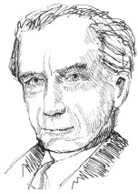

Bertrand Russell (1872-1970), analitik felsefenin kurucularındandır. Aristokrat bir İngiliz ailesinde doğan Russell, on yaşında yetim kaldı. 1931’de erkek kardeşinin ölümünün üzerine üçüncü Kont Russell oldu. Bu yüzden bazen ona Lord Russell da denir.

1890’dan başlayarak Russell, önceleri bir öğrenci olarak ve sonraları da bir öğretmen olarak Cambridge’teki Trinity Koleji ile özdeşleşti. 1918’de beş ay hapse atılmasına neden olan I. Dünya Savaşı karşıtı protesto gösterilerine karışmasından dolayı 1916’da kolejden ayrıldı. Trinity’deyken Russell, en önemli felsefî eserinin bir kısmını yazdı ve aynı zamanda Ludwig Wittgenstein ve Amerikalı şair T.S. Eliot’a akıl hocalığı da yaptı. Russell’ın Trinity’den atılması, akademik kariyerini resmen bitirdi ve sonraki yıllar boyunca geçimini üretken bir şekilde yazarak sağladı. Russell’ın en ünlü ve popüler eserlerinin bazıları, Neden Hıristiyan Değilim (1927), evlilik kurumunun bir eleştirisi olan Evlilik ve Ahlâk (1929), Felsefenin Sorunları ve Batı Felsefesi Tarihi’dir (1945).
Russell, G.E. Moore ile beraber analitik felsefeyi geliştirdi. Russell, mantıksalcılığın (tüm matematiksel kavramların mantık sözlüğünü kullanarak tanımlanabileceği ve tüm matematiksel gerçekliklerin mantık kurallarını kullanarak bu tanımlardan türetilebileceği görüşü) önemli bir destekçisiydi. Russell’ın mantık ve matematikteki emeği, Alfred North Whitehead ile birlikte yazdığı Matematik İlkeleri adlı kitabında toplandı.
Russell, aynı zamanda metafiziğe, felsefî analizlere, dil felsefesine, epistemolojiye ve bilim felsefesine büyük katkılar yaptı. 1950’de aldığı Nobel Edebiyat Ödülü, çok az filozofa layık görülen bir onurdu.
EK BİLGİLER:
1. Russell’ın dil felsefesindeki en kalıcı katkılarından biri, ‘kesin tarif kuramı’dır. Kesin bir tarif, “Fransa Kralı keldir” gibi cümlelerdeki “Fransa Kralı” gibi bir ifadedir. Klasik bir makalesinde (“Gösterme Üzerine”), Russell kesin tarifler olarak belirli isimlerin nasıl analiz edileceğini gösterdi.
2. Russell, Russell paradoksu olarak bilinen Gottlob Frege’nin mantık sistemindeki resmen bir tutarsızlığı keşfetti. Bu tutarsızlığı öğrenmesinin üstüne Frege, hatalı olarak hayatının eserinin bir sıfır olduğunu düşündü.
3. Russell, Vietnam’daki savaşın sözünü sakınmayan bir muhalifiydi.